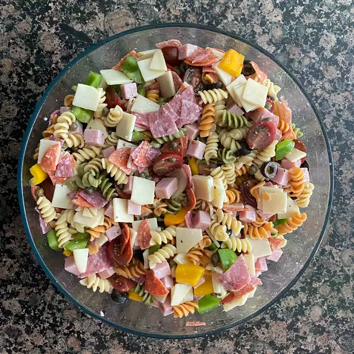

Awesome Pasta Salad

Description
This juicy Awesome Pasta Salad will melt your tastebuds
Ingredients
- 1 (16 ounce) package fusilli (spiral) pasta
- 3 cups cherry tomatoes, halved
- ½ pound provolone cheese, cubed
- ¼ pound sliced pepperoni, cut in half
- 1 large green bell pepper, cut into 1 inch pieces
- 1 (10 ounce) can black olives, drained
- 1 (4 ounce) jar pimentos, drained
- 1 (8 ounce) bottle Italian salad dressing
Steps
- Bring a large pot of lightly salted water to a boil. Add pasta, and cook for 8 to 10 minutes or until al dente. Drain, and rinse with cold water.
- In a large bowl, combine pasta with tomatoes, cheese, salami, pepperoni, green pepper, olives, and pimentos. Pour in salad dressing, and toss to coat.